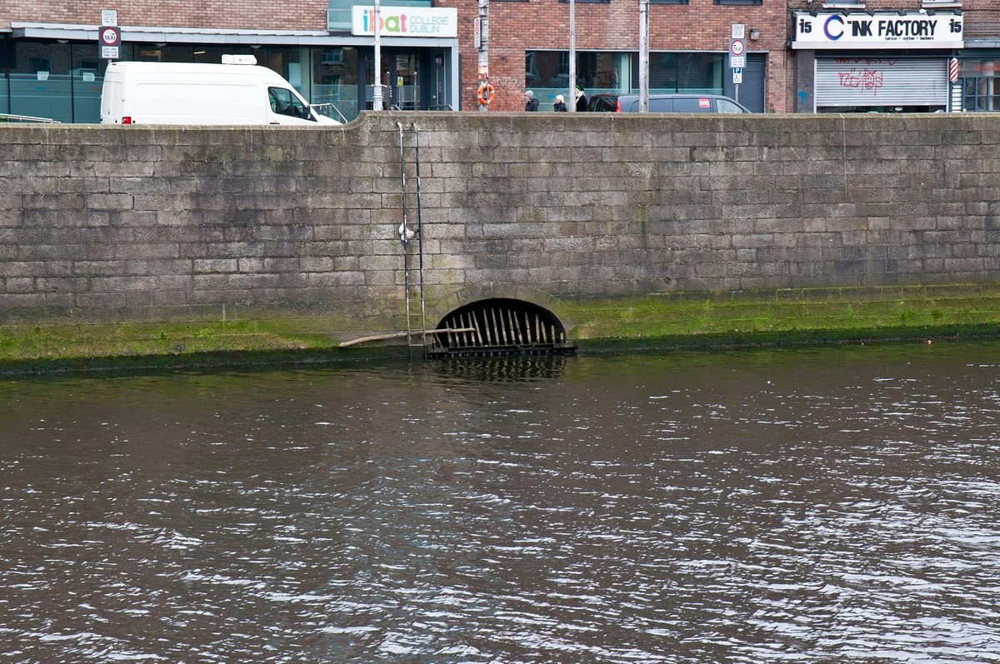

In this document we will try to explain the toponomy of the city of Dublin
Meaning of "Dublin"
The name Dublin comes from "Dubh Linn" , which means "black lagoon" , and they're just ashamed. So, without explaining what the black lagoon is all about, and why this lagoon was so important as to give its name to the city.
Poddle River
At that time the Poddle formed a lagoon before flowing into the Liffey. This lagoon was accessible by boat from the Liffey, so the Vikings used to moor their ships there, and therefore built the city next to the lagoon. As you can imagine, this lagoon was the "black lagoon" that gave its name to the city of Dublin. In the Middle Ages, the Normans conquered Ireland, built Dublin Castle and fortified the city. The River Poddle passed to the south and east of the castle, and supplemented the fortifications. Over time, the Poddle became insufficient to provide the water needed for the city, the lagoon ceased to be used and was eventually modified and then filled in, the city continued to grow, and, as space was needed, in the late Middle Ages they channeled the Poddle through subway pipes so that they could build on top of it without it getting in the way. Since then, as the city grew, they covered more and more sections of the Poddle. Today, only the name of the black lagoon remains, and the mouth of the Poddle can only be seen at low tide.
